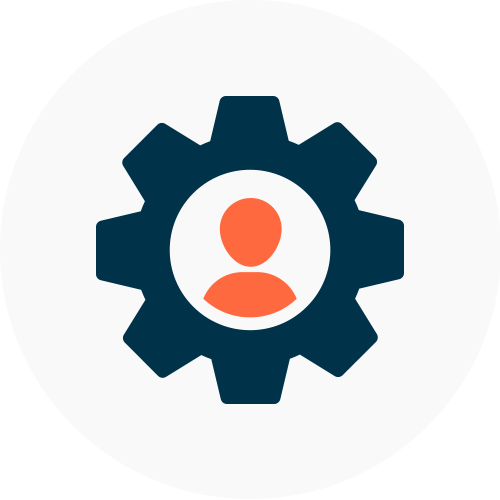

Mes Projets
Voici mes projets qui touchent l'informatique
SAE1.01

Implémentation d'un besoin client
Pour ce projet d'initiation au développement, nous devions créer une application en Java et rédiger un compte rendu en anglais. Cette application devait trier des dépêches dans plusieurs catégories.
Nous développions en binôme ce projet :
Je m’occupais de l’implémentation pour faire un algorithme de tri et faire une IA pour générer les paramètres de l’algorithme.
Mon binôme lui s’occupait de la comparaison des approches qui consiste à améliorer le temps de calcul de l’algorithme.
Ce projet m’a permis d’avoir un avant-goût du monde professionnel car nous avions une contrainte à réaliser et une Dead-line. Il m’a aussi permis de me focaliser sur la rédaction d’un carnet de bord pour préparer l’oral de présentation pour les clients. J’ai aussi acquis des compétences comme implémenter et élaborer des conceptions, analyser un problème avec méthode, comparer des algorithmes.
SAE1.02

Comparaison d'approches algorithmiques
Pour ce projet d'initiation au développement nous devions créer une application en java et rédiger un compte rendu en anglais, Cette application devait trier des dépêches dans plusieurs catégories
Nous développions en binôme ce projet :
Je m’occupais de l’implémentation pour faire un algorithme de tri et faire une IA pour générer les paramètres de l’algorithme
Mon binôme lui s’occupait de la comparaison des approches qui consiste à améliorer le temps de calcul de l’algorithme
Ce projet m’a permis d’avoir un avant-goût du monde professionnel car nous avions une contrainte à réaliser et une Dead-line. Il m’a aussi permis de me focaliser sur la rédaction d’un carnet de bord pour permettre de préparer l’oral de présentation pour les clients. J’ai aussi acquis des compétences comme Implémenter et élaborer des conceptions, Analyser un problème avec méthode, comparer des algorithmes.
SAE1.03

Installation d'un poste pour le développement
Pour ce projet d’installation d'un poste pour le développement, je devais créer un poste de travail Debian sur Linux sur une VM (Machine Virtuel). Le but à la fin de ce projet est d’installer et configurer la VM (et d’installer des packages).
Le procédé de ce projet était :
Installer l’image iso de Debian (et vérifier l’installation)
Crée une vm avec cette image
Installer Debian sur la vm et le configurer
Installer des logiciels et des packages
Ce projet m’a permis Identifier les différents composants (matériel et logiciels) d’un système numérique, d’utiliser les fonctionnalités de base d’un système multitâches / multiutilisateurs et d’installer et configurer un système d’exploitation et des outils de développement.
SAE1.04

Création d'une base de données
Pour ce projet a pour but de créer une base de données et l’utilisation de la base de données.
Nous travaillions en binôme :
Je m’occupais de la partie création et gestion de la base de données
Mon binôme lui s’occupait de la partie traitement et analyse des données
Grace à ce projet j’ai acquis plusieurs compétences comme le fait de créer des tables SQL ou encore du remplissage de la base de données.
SAE1.05
Recueil de besoins
Ce projet a pour but de créer un site web pour une entreprise compréhensible pour des élèves de 3eme
Lors de ce projet nous étions 4 et chacun avais devais allez chercher, trier, traiter les informations trouvées pour enfin les mettre sur le site web créé (en groupe) pour pouvoir faire une présentation orale au client.
Grace à ce projet j’ai acquis plusieurs compétences comme le fait de commencer à utiliser le langage d’entreprise et le simplifier ou encore et faire un site web en groupe ce qui change de le faire tout seul car on doit comprendre le code de ses collègues avant de pouvoir le compléter, Mais surtout ce fut mon premier gros projet avec une équipe de plus que deux personnes.
SAE1.06
Découverte de l'environnement économique et écologique
Ce projet a pour but de créer un site web pour une entreprise compréhensible pour des élèves de 3eme
Lors de ce projet nous étions 4 et chacun avais devais allez chercher, trier, traiter les informations trouvées pour enfin les mettre sur le site web créé (en groupe) pour pouvoir faire une présentation orale au client.
Grace à ce projet j’ai acquis plusieurs compétences comme le fait de commencer à utiliser le langage d’entreprise et le simplifier ou encore et faire un site web en groupe ce qui change de le faire tout seul car on doit comprendre le code de ses collègues avant de pouvoir le compléter, Mais surtout ce fut mon premier gros projet avec une équipe de plus que deux personnes.